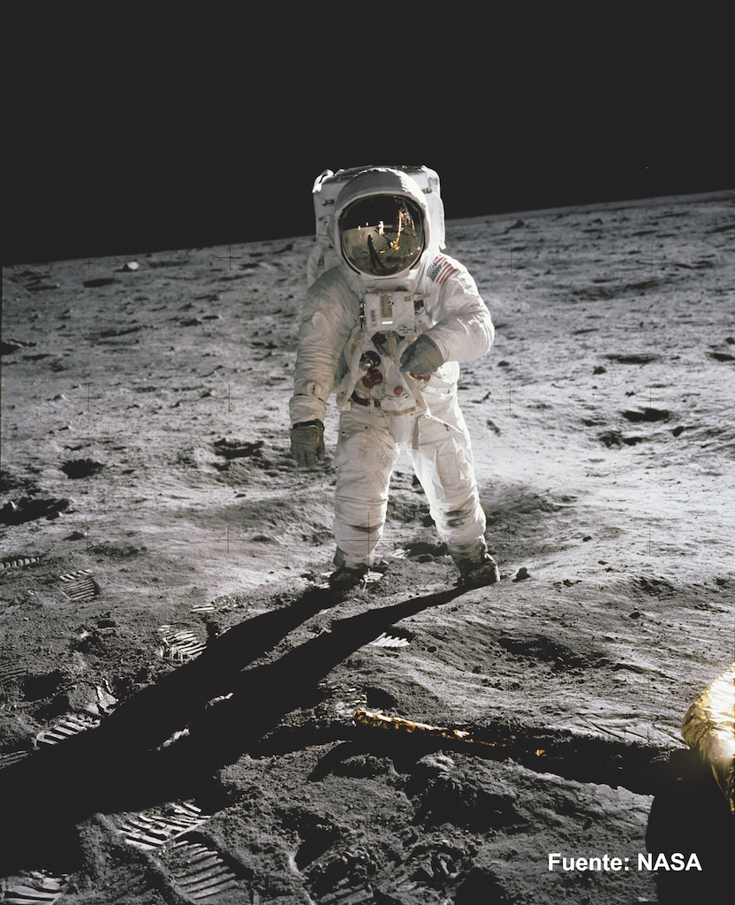

Lentes ZEISS
en Lugo
Gama completa ZEISS en el centro histórico de Lugo · Rúa do Teatro, Bajo 2

Apollo 11 · 1969 · Fuente: NASA
En 1969, las cámaras Hasselblad que Neil Armstrong y Buzz Aldrin llevaron a la Luna montaban óptica ZEISS. Las fotografías del Apollo 11 — las imágenes más vistas de la historia de la humanidad — fueron tomadas con lentes fabricadas en Oberkochen.
ZEISS lleva más de 175 años fabricando óptica de precisión. Sus lentes oftálmicas son el resultado de décadas de investigación aplicada, y cada nueva tecnología que presentan redefine lo que puede conseguirse en visión correctiva. En Panisse Óptica trabajamos la gama completa ZEISS: progresivas, monofocales, fotocromáticas y recubrimientos de última generación.
Una lente ZEISS bien adaptada no es solo una lente de calidad — es una lente calculada para tu graduación, tu montura y tu forma de ver el mundo. La diferencia está en los detalles: en medir correctamente, en elegir el diseño adecuado a tu perfil visual y en montar con la precisión que ZEISS exige a sus distribuidores.
ZEISS ClearMind
Visión Clara desde el primer día
La gran barrera de las lentes progresivas siempre ha sido la adaptación. Muchas personas tardan semanas en acostumbrarse, y algunas directamente las abandonan. ZEISS ClearMind resuelve esto con un diseño que minimiza las zonas de distorsión periférica y amplía el corredor de visión intermedia — el espacio donde más horas pasamos hoy, frente a pantallas y dispositivos.
El resultado es una progresiva que se siente natural desde los primeros días, con transiciones suaves entre distancias y una zona de lectura accesible sin inclinar la cabeza.
- Adaptación en días, no en semanas
- Zona intermedia ampliada para pantallas y trabajo
- Reducción de las zonas de distorsión lateral
- Compatible con monturas modernas, incluidas las pequeñas
- Ideal para quienes se estrenan en progresivas
ZEISS DuraVision Gold UV
Protección 360° para tus ojos
El recubrimiento de una lente no es un accesorio — es parte de la óptica. El DuraVision Gold UV de ZEISS integra en una sola capa todo lo que una lente oftálmica necesita: antirreflejante multicapa de alta precisión, endurecimiento contra arañazos, tratamiento anti-suciedad y lo más importante — protección UV completa también en la cara posterior de la lente.
Este último punto marca la diferencia: la radiación UV no solo llega desde el frente. Se refleja desde el suelo, el agua y el asfalto, y penetra por detrás de la lente directamente hacia el ojo. DuraVision Gold UV bloquea el 100% de la radiación UV también ahí.
- Antirreflejante multicapa con reflejo residual inferior al 0,5%
- Protección UV 360°: frontal y posterior
- Tratamiento oleofóbico e hidrofóbico: el agua y la grasa resbalan
- Dureza comparable a cristal mineral
- Anti-electricidad estática: acumula menos polvo
- Claridad visual superior en conducción nocturna y pantallas
Gama completa
Más tecnologías ZEISS
disponibles en Panisse
ZEISS SmartLife
Diseñada para la generación digital. Optimiza la lente para los patrones de movimiento ocular actuales — más tiempo mirando pantallas, menos movimientos de cabeza. Tecnología Luminance Design para cada condición de luz.
ZEISS Individual
El tope de la gama. El diseño se calcula con más de 10 parámetros biométricos del usuario: distancia corneovertex, ángulo pantoscópico, envolvencia de la montura y postura habitual. El resultado son zonas útiles de visión significativamente más amplias.
ZEISS PhotoFusion X
La generación actual de fotocromáticas ZEISS. Oscurecen y aclaran más rápido que cualquier generación anterior. Disponibles en gris, marrón y verde, compatibles con DuraVision Gold.
ZEISS DriveSafe
Lente diseñada para conducción. Reduce el deslumbramiento de los LED de otros vehículos y optimiza la visión en condiciones de lluvia y baja luminosidad. Un argumento que tus ojos notarán en cada trayecto nocturno.
ZEISS Digital Lens
Para quienes aún no necesitan progresiva pero acusan fatiga visual por pantallas. Una ligera adición de potencia en la zona inferior descarga el esfuerzo acomodativo y reduce el cansancio al final del día.
DuraVision BlueProtect
Filtro de luz azul integrado en el recubrimiento. Para quienes pasan muchas horas frente a pantallas y quieren reducir el impacto de la luz azul de alta energía en su descanso visual y nocturno.
Una lente ZEISS es tan buena
como quien la adapta
Cualquier óptica puede tener el logo de ZEISS. La calidad real de una lente progresiva depende de cómo se mide, qué diseño se elige y con qué precisión se monta. En Panisse tomamos todos los parámetros necesarios para que la lente rinda al máximo — y elegimos el diseño ZEISS adecuado a tu perfil visual, no el de siempre.
Trabajamos toda la gama ZEISS — progresivas, monofocales, fotocromáticas y recubrimientos — para poder elegir lo que realmente necesitas.
Los parámetros de centrado y posición de uso se miden en consulta, con la montura elegida. Sin atajos.
Félix Salvador Pérez, óptico-optometrista y farmacéutico licenciado, integra la salud visual en cada prescripción.
Si necesitas ajustes después del montaje, los hacemos. Cada cliente es un caso, no un pedido.
Consulta tu lente
ZEISS ideal
Pide cita y te asesoramos sin compromiso en Rúa do Teatro, Bajo 2, Lugo. Empieza con un Estudio Visual de Precisión para elegir la lente que mejor se adapta a tu visión.
Preguntas frecuentes
Todo sobre las
lentes ZEISS en Lugo
¿Qué son las lentes ZEISS ClearMind?
ZEISS ClearMind es una progresiva diseñada para facilitar la adaptación desde el primer día. Su diseño minimiza las zonas de distorsión periférica y amplía la zona de visión intermedia, reduciendo el tiempo de adaptación a pocos días frente a las semanas habituales con progresivas convencionales.
¿Qué es el recubrimiento ZEISS DuraVision Gold UV?
El DuraVision Gold UV es el recubrimiento antirreflejante premium de ZEISS. Integra antirreflejante multicapa, endurecimiento, tratamiento anti-suciedad, anti-electricidad estática y — lo más importante — protección UV 360° que incluye la cara posterior de la lente, donde la mayoría de recubrimientos no actúan.
¿Por qué es importante la protección UV en la cara posterior?
La radiación UV no solo llega desde el frente. Se refleja desde el suelo, el agua y el asfalto, y penetra por detrás de la lente directamente hacia el ojo. El DuraVision Gold UV bloquea el 100% de la radiación UV también en la cara posterior, algo que la mayoría de recubrimientos del mercado ignoran.
¿Trabajan la gama completa de lentes ZEISS en Panisse?
Sí. Trabajamos toda la gama ZEISS: ClearMind, SmartLife, Individual, PhotoFusion X, DriveSafe y Digital Lens, además de todos los recubrimientos DuraVision. Cada lente se selecciona según el perfil visual y el estilo de vida del cliente.
¿Qué diferencia a Panisse para las lentes ZEISS?
Trabajamos la gama completa ZEISS y medimos todos los parámetros necesarios para que la lente rinda al máximo. Félix Salvador Pérez, óptico-optometrista y farmacéutico licenciado, toma los parámetros de centrado y posición de uso en consulta, con la montura elegida. Una lente ZEISS montada sin los parámetros correctos no rinde igual que una adaptada con precisión.